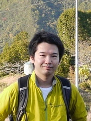

Work Experience
Current
- January 2022 - : Senior Researcher, Connected Company, Toyota Motor Corporation
- January 2022 - : Project Assistant Professor, Information Technology Center, The University of Tokyo
- April 2018 - : Research Fellow, Keio University
Past
- April 2019 - December 2021: Visiting Researcher, KDDI Research
- April 2016 - December 2021: Assistant Professor, Information Technology Center, The University of Tokyo
- June 2017 - March 2019 : Visiting Researcher, Adaptive Communications Research Laboratories, Advanced Telecommunications Research Institute International
- June 2013 - March 2016: Researcher, Nara Institute of Science and Technology
I was working as a researcher in the NECOMA Project (web). The project was a collaborative research and development project of cyber security among EU and Japan. The project tackles to improve cyber resilience on the Internet.
- July 2011 - Oct 2011 : Intern, Microsoft Research Asia
Education
- April 2009 - December 2014
- Graduate School of Information Science
- Nara Institute of Science and Technology
- April 2007 - March 2009
- Graduate School of Information Science
- Nara Institute of Science and Technology
- April 2006 - March 2007
- Department of Information Science
- Toyohashi University of Technology, Aichi, Japan. (skip to master course in NAIST)
- April 2001 - March 2006
- Department of Electrical Engineering
- Maizuru National College of Technology, Kyoto, Japan.
Dissertation
- Title: Location-based Information Delivery over The Internet (in Japanese)
- Committee Member: Suguru Yamaguchi, Minoru Ito, Nobuo Kawaguchi, Youki Kadobayashi
- Date: December 2014
- Degree: Doctor of Engineering (NAIST)
Publication List
Journal
- 阿部 博, 島 慶一, 宮本 大輔, 関谷 勇司, 石原 知洋, 岡田 和也, 中村 遼, 松浦 知史, 篠田 陽一, 「時間軸検索に最適化したスケールアウト可能な高速ログ検索エンジンの実現と評価」, 情報処理学会論文誌, 60巻3号, pp.728-737, 2019年3月.
- 関谷勇司, 中村遼, 岡田和也, 堀場勝広. SDNとNFVによる新たなネットワークサービス構造の提案. 電子情報通信学会論文誌, Vol. J98-B, No. 4, pp. 333-344, April 2015.
- 岡田和也, 奥田剛, 門林雄基, 山口英. 位置依存情報配信を目的としたipv6マルチキャストアドレスの設計と評価. 情報処理学会論文誌, Vol. 55, No. 2, pp. 619-629, 2月 2014年.
Conference and Workshop (reviewed)
- T.Suga, K.Okada, H.Esaki, “Toward Real-time Packet Classification for Preventing Malicious Traffic by Machine Learning”, 1st International Workshop on Artificial Intelligence and Machine Learning Technologies for Enhanced Network Management (AIMLEM 2019), Paris, France, February 2019.
- K. Okada, S. Kashihara, Y. Kondo, N. Suzuki and H. Yokoyama, "Device-Based Network Selection for Edge Computing," 16th IEEE Annual Consumer Communications & Networking Conference (CCNC), Las Vegas, NV, USA, 2019, pp. 1-2. doi: 10.1109/CCNC.2019. (demo) [IEEE DL]
- Kazuya Okada, Shigeru Kashihara, Nao Kawanishi, Nobuo Suzuki, Keizo Sugiyama and Youki Kadobayashi, "GoEdge: A Scalable and Stateless Local Breakout Method", Theory and Practice for Integrated Cloud, Fog and Edge Computing Paradigms (TOPIC 2018), July 2018. (workshop)
- Ryo Nakamura, Yuji Sekiya, Diasuke Miyamoto, Kazuya Okada and Tomohiro Ishihara, "Malicious Host Detection by Imaging SYN Packets and A Neural Network", IEEE International Symposium on Networks, Computers and Comunications (IEEE ISNCC2018), Roma, Italy, June 2018 (short paper) [< a href=https://ieeexplore.ieee.org/document/8530964>IEEE DL]
- 須賀 灯希, 岡田 和也, 江崎 浩, "機械学習による悪性トラフィック遮断のための高速パケット分類機構の検討", 電子情報通信学会 第16回ネットワークソフトウェア研究会, 2018年6月.
- Hiroshi Abe, Keiichi Shima, Yuji Sekiya, Daisuke Miyamoto, Tomohiro Ishihara, Kazuya Okada, "Hayabusa: Simple and Fast Full-Text Search Engine for Massive System Log Data", Conference on Future Internet (CFI'17), June 16, 2017.[ACM DL]
- Keiichi Shima, Hiroshi Abe, Daisuke Miyamoto, Tomohiro Ishihara, Kazuya Okada, Yuji Sekiya, "URL Classification using BoF of URL bitstream", Extended Abstract Session of Conference on Future Internet (CFI'17 Extended Abstract Session), June 15, 2017.
- Keiichi Shima, Daisuke Miyamoto, Hiroshi Abe, Tomohiro Ishihara, Kazuya Okada, Yuji Sekiya, Hirochika Asai, Yusuke Doi, "Classification of URL bitstreams using Bag of Bytes" , First International Workshop on Network Intelligence (NI2018), February 20-22, 2018. [IEEE DL]
- R. Nakamura, K. Okada, S. Saito, H. Tanahashi and Y. Sekiya, "FlowFall: A Service Chaining Architecture with Commodity Technologies," 2015 IEEE 23rd International Conference on Network Protocols (ICNP), San Francisco, CA, 2015, pp. 425-431.
- Jema David Nidbwile, Kazuya Okada, Youki Kadobayashi, and A. Govardhan. Web Server Protection against Application Layer DDoS Attacks using Machine Learning and Traffic Authentication. In Proceeding of the 5th IEEE International Workshop on Network Technologies for Security, Administration and Protection (NETSAP 2015), July 2015.
- Pernelle Mensah, Gregory Blanc, Kazuya Okada, Daisuke Miyamoto, and Youki Kadobayashi. AJNA: Anti-Phishing JS-based Visual Analysis, to Mitigate Users' Excessive Trust in SSL/TLS. In Proceeding of the 4th International Workshop on Building Analysis Datasets and Gathering Experience Returns for Security (BADGERS2015), November 2015.
- Hajime Tazaki, Kazuya Okada, Yuji Sekiya and Youki Kadobayashi. MATATABI: Multi-layer Threat Analysis Platform with Hadoop. In Proceeding of the 3rd International Workshop on Building Analysis Datasets and Gathering Experience Returns for Security (BADGERS2014), September 2014.
- Kazuya Okada, Hiroaki Hazeyama, and Youki Kadobayashi. Oblivious DDoS Mitigation with Locator/ID Separation Protocol. In The 9th International Conference on Future Internet Technologies (CFI2014), Jun 2014.
- Junya Niwa, Kazuya Okada, Takeshi Okuda, and Suguru Yamaguchi. MPSDataStore: A Sensor Data Repository System for Mobile Participatory Sensing. In Proceedings of The Second ACM SIGCOMM Workshop on Mobile Cloud Computing (MCC2013), August 2013.
- Kazuya Okada, Takeshi Okuda, and Suguru Yamaguchi. Design of Geographically Aggregatable Address and Routing toward Location Based Multicast. In Proceedings of the 2013 IEEE Workshop of Pervasive Internet of Things and Smart Cities(PITSaC 2013), March 2013.
- Kazuya Okada, Hiroaki Hazeyama, Teruaki Yokoyama, Takeshi Okuda, and SuguruYamaguchi. A Preliminary Analysis of Railway Disaster Information Distribution by Broadcasting Media toward the Distribution based on Location History. In Proceedings of the 2011 International Conference on Information and Computer Applications (ICICA 2011), March 2011.
Domestic Conference (in Japan)
- 岡田和也, 樫原 茂, 近藤良久, 鈴木信雄, 横山浩之. エッジコンピューティングを考慮した端末ベースのネットワーク選択手法の提案.信学技報, vol. 118, no. 305, MoNA2018-23, pp. 7-12, 2018年11月.
- Kazuya Okada, Shigeru Kashihara, Nao Kawanishi, Nobuo Suzuki, Keizo Sugiyama, Youki Kadobayashi. An Implementation Model of Scalable Traffic Steering for MEC, IEICE technical report, Vol.117, pp. 1-6, January 2018. (in Japanese)
- Kazunori Kamiya, Ayako Hasegawa, Yuji Sekiya, Kazuya Okada. A Study of Detecting Infected Hosts by Graph Analysis of DNS Server Logs. IEICE Technical Report, Vol.117, pp. 53-58, November 2017. (in Japanese)
- 西山泰史, 熊谷充敏, 岡野 靖, 神谷和憲, 谷川真樹, 岡田和也, 関谷勇司. HTTP通信に着目したDeep Learningに基づくマルウェア感染端末検知手法と検知性能評価. 電子情報通信学会研究報告, Vol.116, pp. 49-54, 2017年3月. (in Japanese)
- Tsukasa Yoneda, Kazuya Okada, Hiroaki Hazeyama, Youki Kadobayashi. A Proposal of a Virtual Router Migration Control System Using Multilayer NDL in Virtual Network Environments. IEICE Technical Report, IA2010-68, Vol.110, pp. 61-66, December 2010.(in Japanese)
- Noppawat Chaisamran, Gregory Blanc, Kazuya Okada, Takeshi Okuda, and Suguru Yamaguchi. Basic Trust Calculation to Prevent Spam in VoIP Network based on Call Duration (Single Hop Consideration). In IEICE Technical Report, IA2010-51, Vol.110, pp. 1-6, November 2010.
- Xin Wang, Kazuya Okada, Gregory Blanc, Takeshi Okuda, Suguru Yamaguchi. A Sybil Node Detection Method for Chord. Computer Security Symposium2010(CSS2010), pp. 723-728, October 2010.(in Japanese)
- Kousuke Moribe, Kazuya Okada, Hiroaki Hazeyama, Youki Kadobayashi. A proposal of fluctuation-based detection method against Bot players on multi-player online games. Computer Security Symposium2010(CSS2010), pp. 717-722, October 2010.(in Japanese)
- Kazuya Okada, Teruaki Yokoyama, Youki Kadobayashi, Suguru Yamaguchi. Estimating Location Relationship from User Trajectories and its Application. DICOMO2009, pp. 1120-1126, July 2009.(in Japanese)
- Kazuya Okada, Teruaki Yokoyama, Takeshi Okuda, Shigeru Kashihara, Youki Kadobayashi, Suguru Yamaguchi. Proposal of a Method for Extracting Points of Interest from User ’s Trajectory. IPSJ Technical Report
Poster
- Katsuhiro Horiba, Kazuya Okada, Yoshihiro Okamoto, and Ryo Nakamura. Adaptive Server Load Balancing on Distributed Cloud. In Asian Internet Engineering Conference (AINTEC) Poster session, November 2011. (poster).
- Kazuya Okada, Teruaki Yokoyama, Youki Kadobayashi, Suguru Yamaguchi. Problem Analysis on Railway Networks. Symposium on Center for Spatial Information Science CSIS DAYS 2010 , November 2010.(Poster Session in Japanese)
Patent
- 特願2019-015817 発明名称: 通信装置, 2019年1月.
- 特願2018-111069 発明名称: 通信装置、パケット処理方法及びプログラム, 2018年5月.
Grant
競争的資金（科研費）
- 日本学術振興会, 科学研究費補助金（基盤研究 (C)・代表）. 汎用NICによる高精度タイムスタンプの応用に関する研究. 2019年4月-2022年3月.
- 日本学術振興会, 科学研究費補助金（研究活動スタート支援・代表）. ソフトウェアにより仮想化されたネットワークインフラの監視手法の確立. 2016年10月-2018年3月.
競争的資金（その他）
- 科学技術振興機構 (JST), 戦略的創造研究推進事業 CREST,「課題名：サイバー脅威ビッグデータの解析によるリアルタイム攻撃検知と予測」, 研究分担者, 2017年10月 - 2020年3月．(web)
共同研究
- NTTセキュアプラットフォーム研究所, 2017年-2019年.
Professional Experience
- 2015 : Local Arrangement Chair, RAID2015 (web)
- 2011, 2012, 2015-2019: INTEROP Tokyo ShowNet NOC Team Member
- 2012 - : DIX-IE/NSPIXP Operator
- 2011 - : WIDE Cloud Operator
- 2007 - : WIDE Network Operator
- 2008, 2009, 2010 : INTEROP Tokyo ShowNet Team Member
Teaching
- Spring Semester, 2018- : THEORY OF SERVICE CREATION BASED ON SOFTWARE TECHNOLOGY (Advanced) (in Japanese), Keio University
- Fall Semester, 2017- : THEORY OF SERVICE CREATION BASED ON SOFTWARE TECHNOLOGY (BASIC) (in Japanese), Keio University
- August 2015 : "Introduction of SDN and OpenFlow Programming" NECOMA Summer School
Skill
- Language: Ruby, Python, C, C++, JavaScript, Shell, R
- OS: FreeBSD, Ubuntu, CentOS, MacOSX
- Networking: L2, L3 (OSPF, RIP), OpenFlow, Cisco, Juniper, Brocade (Foundry)
- Service: DHCP, DNS, Web, Hadoop, MySQL
Membership
- ACM, IEICE, WIDE Project
Contact
- mail : okada AT ecc.u-tokyo.ac.jp
- Address : Yayoi 2-11-16, Bunkyo-ku, Tokyo, Japan 1138650